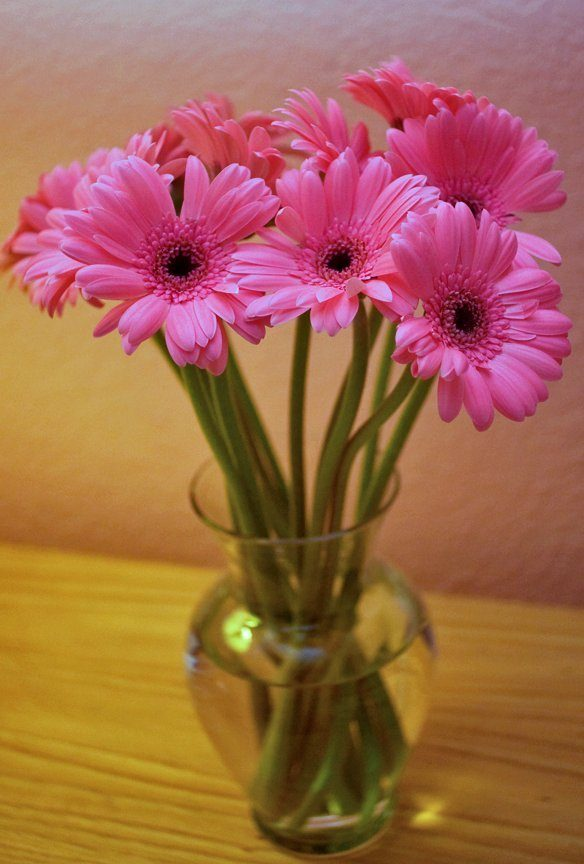

制作側の連想
「light」を「淡い」と読んでみた
店名の由来は分かりません。制作側は、英語の「light」に光・軽い・淡いなど複数の意味があることから、色名の頭に付く「淡い」を連想しました。そこでこのページは、light blue や light green など淡い色名を5枚並べた「色見本帖」に見立てています。「制作側の連想で、お店の理念・由来とは無関係」です。
色見本帖(イメージ)
淡い5色、5枚の見本。
写真は南さつま市やお店のものではありません。色のイメージで選んだ、国外・撮影地不明のフリー素材です。

撮影地不明のイメージ No.1light blueライトブルー
撮影地不明のイメージ No.2light greenライトグリーン
国外のイメージ(スウェーデン) No.3light yellowライトイエロー
撮影地不明のイメージ No.4light pinkライトピンク
国外のイメージ(ドイツ) No.5light grayライトグレー
ご案内
お店のこと(確認できたものだけ)
| 所在地 | 〒898-0102 鹿児島県南さつま市坊津町泊３８４−１ |
|---|---|
| 電話 | なし |
| 営業時間 | 準備中 |
| 定休日 | 準備中 |
| ご予約 | 準備中 |
| 駐車場 | 準備中 |
| SNS | Instagram @cafe_light2022 |